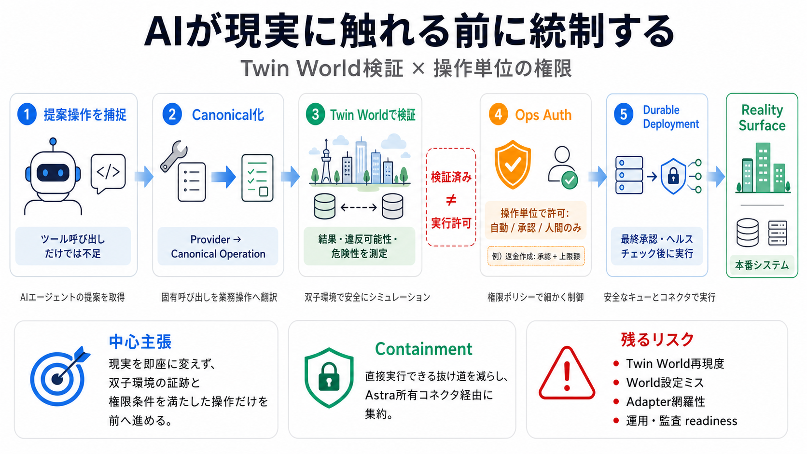

astra-streaming-docs/modules/operations/pages/astream-pricing.adoc at main · datastax/astra-streaming-docs · GitHub
## Navigation Menu. # Provide feedback. We read every piece of feedback, and take your input very seriously. # Saved sea…

Twin World検証と操作権限
AIが業務システムへ影響する前に、提案操作を捕捉・正規化し、双子環境（Twin World）で検証してから実行可否と権限を決めます。
“ツール呼び出し”だけでは不足
AIはツールを呼べても、安全は自動では担保されません。重要なのは「どの操作を、どの範囲で、誰の権限で、どの証跡に基づいて」実行するかです。
現実前のシミュレーション
現実を即座に変えず、双子環境で結果と政策適合の可能性を測定します。そこで集めた証跡と要件を満たした操作だけが前へ進みます。
検証済み ≠ 実行許可
Operational Coverage（検証済み）とReality Surface（現実で許可された操作）を分離します。シミュレーション成功だけでは本番へ出ません。
操作単位の権限付与
権限はプロバイダ全体（例：Stripeアクセス）ではなく、operation（操作単位）で付与します。例として「返金作成」には承認と上限額が必要になります。
ツールを業務操作へ翻訳
モデル／プロバイダ固有のツール呼び出しを、キャノニカルな業務操作へ翻訳してから検証します。結果や政策違反の可能性、危険性を測定します。
抜け道をコンテイン
実行可能なツールコールをCodeastra側で除去し、外部SDKがローカル資格情報で直接実行できないようにします。これにより意図しない“直接実行”のリスクを下げます。
許可後も即反映しない
許可されても即時に本番へ反映せず、暗号化されたAstra所有コネクタによるdurable deployment（耐久型の実行ジョブ）としてキューへ積みます。最終承認・ヘルスチェック・接続確認が必要です。
4つの流れ
運用が価値を決める
Realityセットアップは管理者が行い、接続直後に本番権限が自動付与されない設計を強調します。承認、上限、ヘルスチェック、監査ログが不可欠です。
“安全”は自動ではない
結論
Codeastraは、AIが現実に触れる前の統制を強化する有力な枠組みです。とはいえ安全は技術だけで成立せず、World設計と運用ガバナンスが結果を左右します。
## Navigation Menu. # Provide feedback. We read every piece of feedback, and take your input very seriously. # Saved sea…
(3) Current virtual reality and simulation tools. 1 used in ... jected costs of expanding digital twin-enabled virtual. …
Digital twin cost ranges from $10,000 for a simple proof of concept to $500,000+ for a full enterprise deployment, and i…
A digital twin is a physics-accurate virtual replica of a physical asset, system, or process, kept in sync with real-wor…
Digital Twin in 2026: Why the Real Opportunity Is Moving From Design Models to Live Infrastructure Control. Explore how …